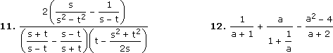
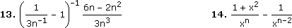
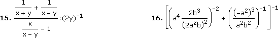
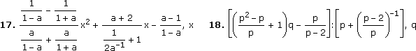
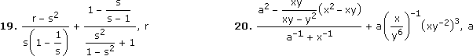

Termtraining - Aufgaben 1
Schreibe Subtraktionen als Additionen, Brüche als Divisionen, Potenzen mit "^" und ergänze fehlende Klammern (A+B+C und A·B·C ausgenommen) gemäß Bindungsvereinbarungen:
2. –52 + 232
7. 15 – (6 + 14)
Schreibe Subtraktionen als Additionen und abstrahiere im Hinblick auf die letztauszuführende Operation:



Schreibe Subtraktionen als Additionen und abstrahiere im Hinblick auf die angegebene Variable:


Termvereinfachungen:
9. 2
10. x/8
11. (s–t)–2
12. (a+3)/(a+1)
13. –2/n2
14. 1/xn
15. 4x/(x+y)
16. a4b2/(4a4–b4)
17. (x+1)2
18. (pq–2q–1)/(p–1)
19. (r–1)/(s–1)
20. a2x
____
Sonstige Ergebnisse:
1. 12 + [–(5:8)] + (9·6)
2. [–(5^2)] + [2^(3^2)]
3. [–(3·7)] + {[16 + (–4)]:(1 + 3)}
4. {20:[15 + (–7)]} + [2^(–1)]
5. (26:3):{[8 + (4^2)]:[4 + (–1)]}
6. 2·(6 + 1)·{1:[3·(5^2)]}
7. 15 + [–(6 + 14)]
8. [(8 + 4):24]·{[8 + (–4)]^2}
9. A + B
10. A·B
11. A:B
12. A + B + C
13. A·B
14. A + B
15. A:B
16. A–1
17. Ax2 + Bx + C
18. (Aq + B):C
19. (r + A):B + C
20. (a2 + A):(a–1 + B) + aC